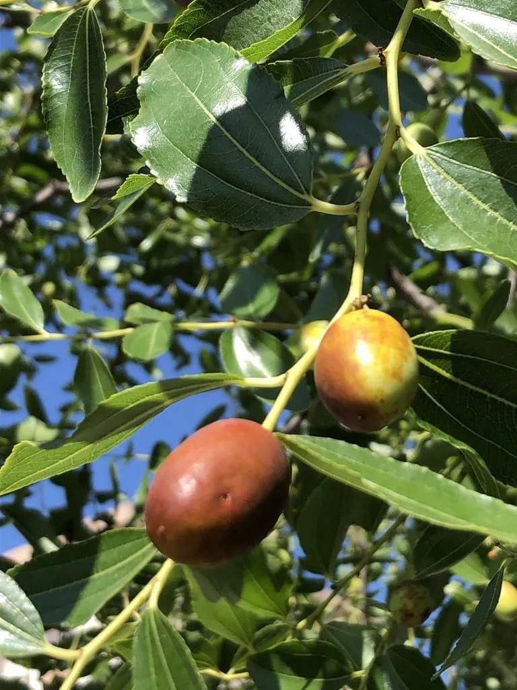

乔木 · 植物界
枣 Ziziphus jujuba

中国原产的落叶小乔木，果实可鲜食、干制成红枣，维生素C含量高，栽培历史可追溯到新石器时代。
- 分类
- 门被子植物门纲木兰纲目蔷薇目科鼠李科属枣属
- 栖息环境
- 海拔 2000 米以下的平原、丘陵与沟谷，喜光耐旱耐瘠薄
- 地理分布
- 原产中国黄河中下游；河北、山东、河南、山西、陕西、新疆等地大量栽培
- 保护级别
- 暂无评估；中国未列入国家重点保护野生植物名录
物种志
枣为鼠李科枣属落叶小乔木或灌木状，高可达 10 米，树皮灰褐色、纵裂，小枝呈“之”字形曲折，托叶常变态为坚硬的针刺。叶片互生，卵形至卵状披针形，三出脉明显，表面光滑。花小，黄绿色，簇生于叶腋，具香气，是重要的蜜源；核果长圆形或卵圆形，未熟时青绿，成熟后暗红、表面皱缩，果肉厚实，内含 1 粒坚硬的纺锤形种子。
枣原产中国，黄河中下游一带是栽培中心，考古在河南、河北的新石器时代遗址中发现过枣核，栽培史可追溯到数千年前。它喜光、耐寒、耐旱、耐瘠薄，也耐盐碱，适应性极强，常用分株、嫁接或根插繁殖。鲜枣可生食，干制后即红枣，可煮粥、炖汤、制蜜枣与枣泥；枣花蜜是优质蜂蜜，枣木坚硬可制器具。中国是世界上最主要的枣生产国。
形态与习性
- 株高可达 10 m，小枝呈“之”字形曲折
- 花期5–6 月，花小、黄绿色、芳香
- 果期8–9 月，成熟后暗红色、皱缩
- 光照极喜光，光照足则坐果多
- 水分耐旱，花期忌多雨
- 土壤耐瘠薄与盐碱，以沙壤土最好
- 主要用途鲜食、制红枣与蜜枣，枣花蜜，枣木制器
趣味知识
- 枣与酸枣亲缘很近，酸枣常被用作枣树的砧木。
- 新石器时代遗址中曾出土枣核，说明中国先民食用枣的历史极早。
- 枣花是优质蜜源，枣花蜜呈琥珀色、不易结晶。
- 鲜枣的维生素C含量远高于柑橘，晒干后则明显下降。